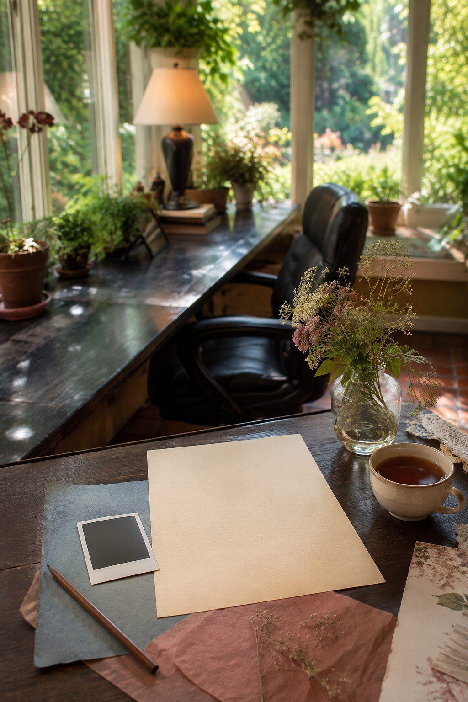
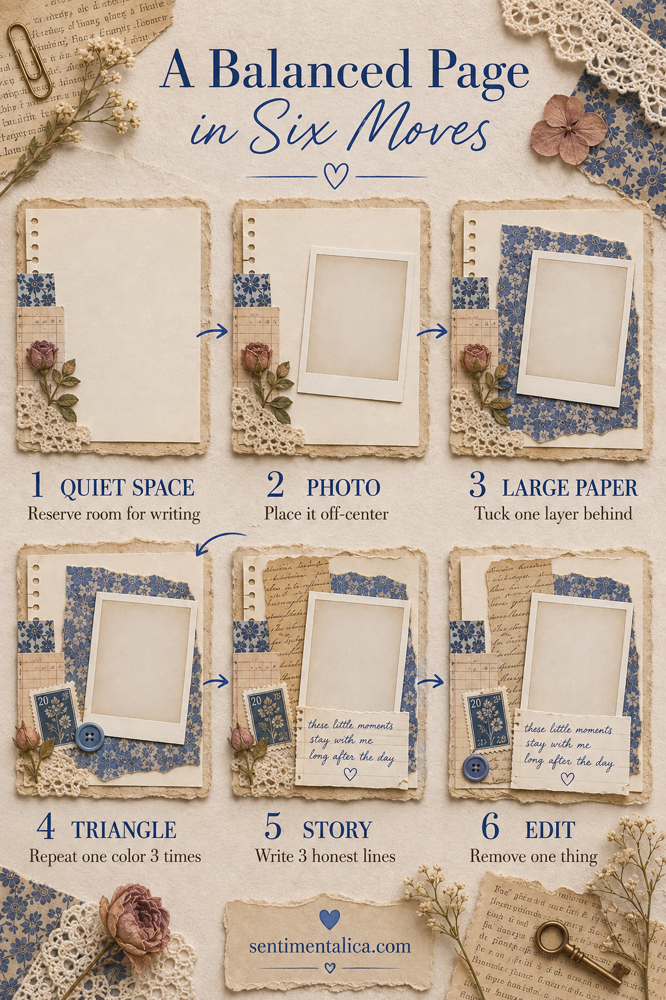

A balanced journal page does not need equal decoration on every side. It needs a clear place to begin, a path for the eye, and somewhere quiet to rest. This six-move layout works with one photograph or focal image and a small handful of paper scraps.
Nothing is glued until the fifth move, so you can change your mind without damaging the page.

Mark the quiet space
Lay the blank page in front of you and cover one third with a spare sheet of paper. This protected area is for writing or breathing room. Do not decorate it while building the rest of the layout.
The quiet space can be vertical, horizontal, or an open corner. Choose the shape that feels most useful for the story you want to tell.
Place the photograph off-center
Set the photograph near one of the imaginary intersections created by dividing the page into thirds. Leave more room on the side where the subject appears to be looking or moving. For a botanical image, leave room in the direction the stem naturally travels.
An off-center focal point gives the page energy without requiring more decoration.
Add one large paper layer
Choose a paper that is visibly larger than the photograph and tuck it behind at a slight offset. Let it support the image rather than forming a perfect frame. Tear one edge or rotate the layer a few degrees if the page feels stiff.
Use one large layer before adding small scraps. Many tiny pieces cannot do the same grounding work.

Build a visual triangle
Pick one accent color from the image and repeat it in three places: perhaps a small tab near the photo, a button lower on the page, and one mark near the writing. The three points should form a loose triangle.
They do not need to match exactly. A blue flower, blue thread, and faded blue paper can still guide the eye as one family.
Add the story
Now write three honest lines in the quiet area. Begin with what happened, add one sensory detail, and finish with why you kept the memory. Short writing often feels more integrated than a long paragraph added after the page is finished.
If you need more room, lift the photograph on a hinge or place longer writing on a card rather than filling every open space.
Remove one thing
Before gluing, take away the smallest decorative piece. If the page loses nothing, keep it off. This final edit is especially useful when every scrap is lovely and therefore feels difficult to reject.
Glue the largest paper first, then the photograph, then the three accent points. Press the page flat and add only the details that still feel necessary.
This layout is repeatable because it relies on roles, not specific supplies: quiet space, focal image, grounding paper, three visual echoes, and a real story. Change the colors and materials, but keep those roles, and the page will continue to feel composed.
Explore more journal-page methods in the Sentimentalica journal.